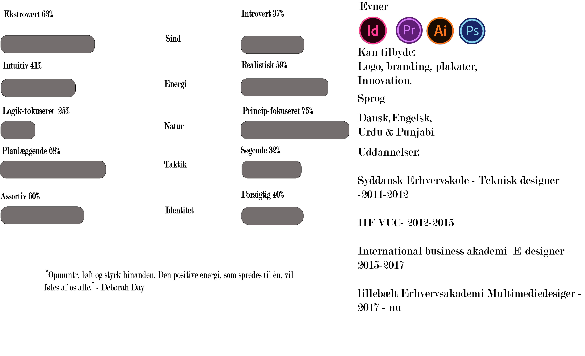

N I D A.
Jeg hedder Nida. S.Salam og bosat i Odense. Til dagligt studerer jeg multimediedesigner på Erhvervsakademiet i Odense, hvor jeg nu er på 1 semester.
Jeg er glad for det grafiske design og brænder for at skabe noget innovativt og unikt hver gang. Igennem de sidste par år har jeg designet logo’er, banner, små grafiske produkter til start-ups og til private begivenheder.
Tidligere har jeg studeret som E-designer på Erhvervsakademi I Kolding via denne uddannelse og har lidt med arbejdet produktudvikling / innovation.
